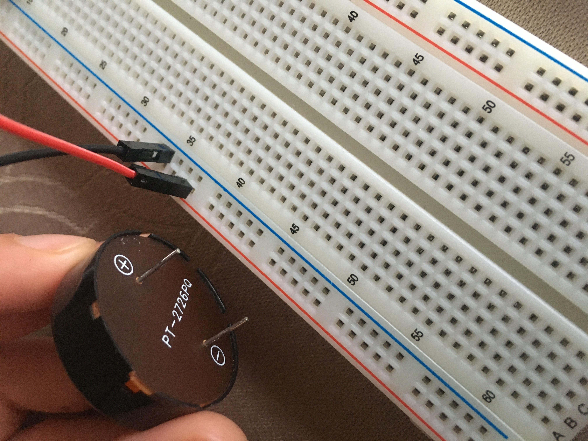
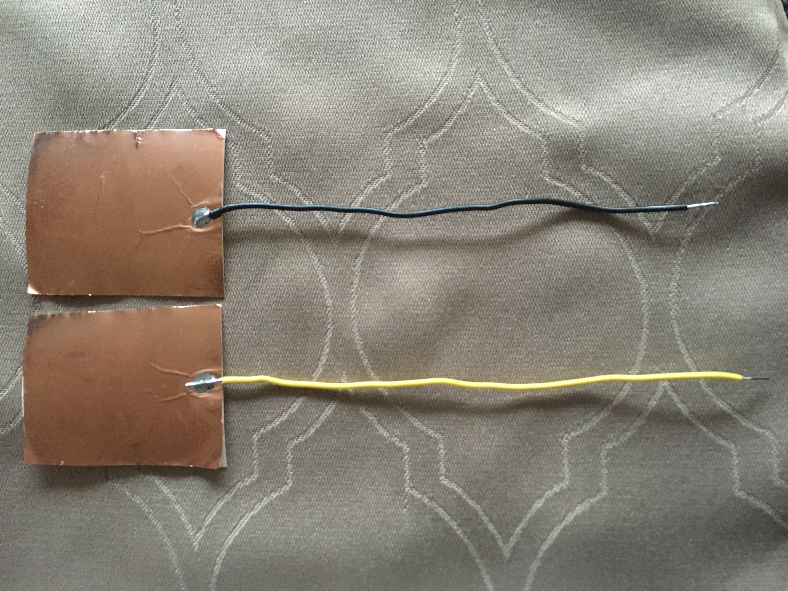
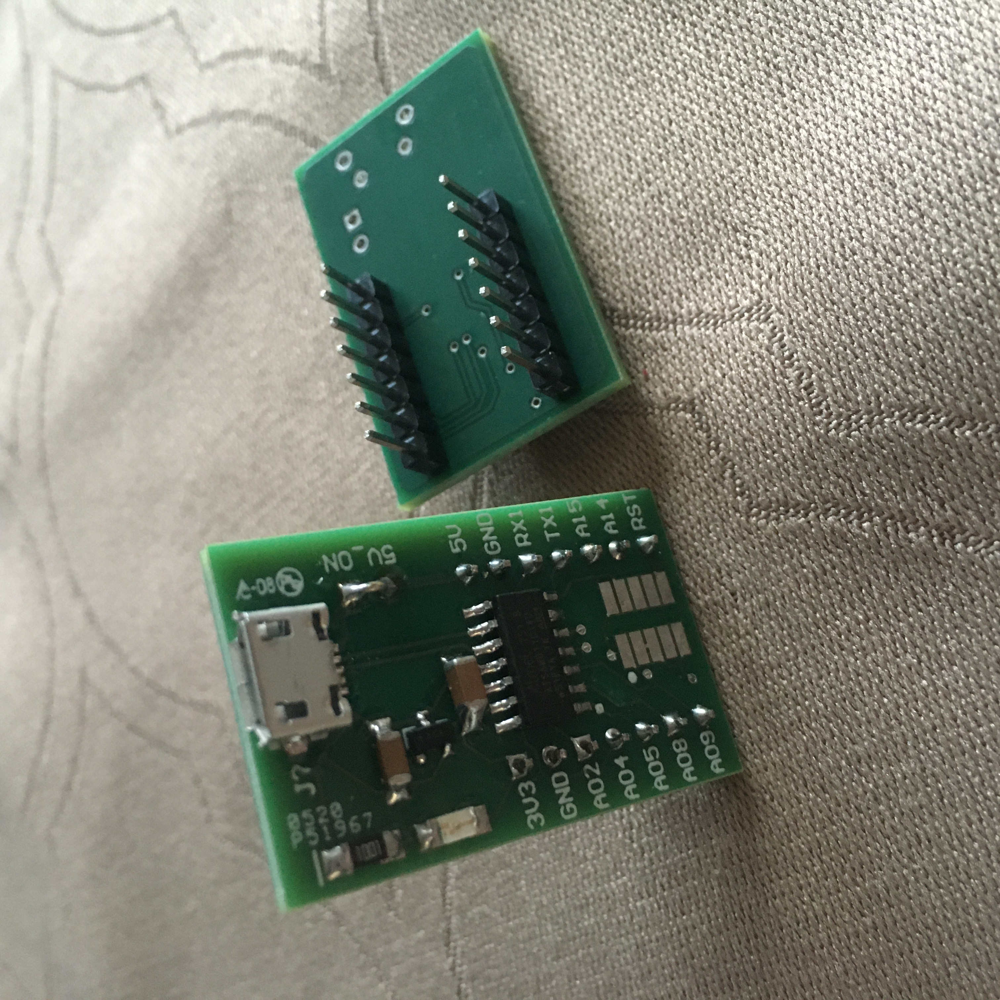

I decided to use the capacitors as a creator of random noise. The project outcome was very entertaining and I was able to study the distances that created different noises. There is a switch to allow it to be turned on and off.
You will need:

- a tone generator. Here I use the vertical strips of the breadboard since it is easier to plug in the tone and make sure the pins are not on the same strip.

- two copper sheets on paper attached to respectice wire.
- and a switch.
I am using Rob's microcontroller. This controller worked better than the Adafruit one, and did not require me to download the driver for Metro (which I was having difficulty with) for capactive touch). I did have to install the MattairTech board pack for Arduino and select the Generic D11C14A board.

The code used:
#include
#include
Servo myservo; //create object
#define PIN 9
#define NUMPIXELS 10
#define DELAYVAL 500 // Time (in milliseconds) to pause between pixels
#define BUTTONPIN 2
#define SERVOPIN 12
Adafruit_NeoPixel strip(NUMPIXELS, PIN, NEO_GRB + NEO_KHZ800);
void setup() {
myservo.attach(SERVOPIN); // attaches the servo on pin 12 to the servo object
strip.begin(); // INITIALIZE NeoPixel strip object (REQUIRED)
strip.show(); // Turn OFF all pixels ASAP
strip.setBrightness(20); // Set BRIGHTNESS low to reduce draw (max = 255)
pinMode(BUTTONPIN, INPUT);
}
void loop() {
myservo.write(60);
delay(1000);
myservo.write(0);
digitalWrite(SERVOPIN, LOW);
strip.clear(); // Set all pixel colors to 'off'
if (digitalRead(BUTTONPIN) == HIGH) {
// The first NeoPixel in a strand is #0, second is 1, all the way up
// to the count of pixels minus one.
for(int i=0; i < NUMPIXELS; i++) { // For each pixel...
// strip.Color() takes RGB values, from 0,0,0 up to 255,255,255
// Here we're using a moderately bright green color:
strip.setPixelColor(i, strip.Color(100, 0, 70));
strip.show(); // Send the updated pixel colors to the hardware.
delay(DELAYVAL); // Pause before next pass through loop
}
}
else {
strip.clear();
}
}